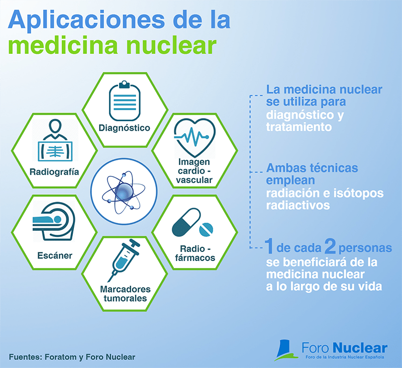

los escaneos de medicina nuclear son herramientas cruciales en el diagnóstico y tratamiento de una amplia gama de enfermedades, ofreciendo capacidades únicas para analizar la función y el metabolismo de los tejidos y órganos del cuerpo. 